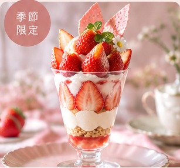
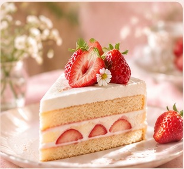
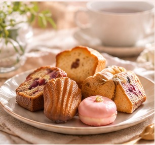

旬のフルーツを使った、心ときめくスイーツをご用意しました。
旬の素材を使った、今だけの特別なスイーツです。

¥1,480
甘酸っぱいいちごとクリームを重ねた、華やかな季節限定パフェ。

¥880
ふわふわのスポンジに、やさしい甘さの生クリームと旬のいちご。

¥780
カフェタイムにぴったりの焼き菓子を、少しずつ楽しめるセット。
季節のフルーツを使ったスイーツと、ゆったりした時間を楽しめる小さなカフェ。日常の中で、ほっとひと息つけるやさしい場所をイメージしています。